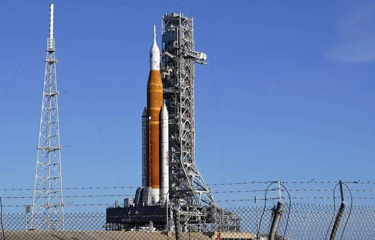

Espace : Découvrez Susie, la fusée « réutilisable » imaginée par ArianeGroup

C’est une première pour l’Europe spatiale. ArianeGroup a dévoilé, dimanche, un nouveau projet d’étage supérieur de fusée « entièrement réutilisable ». Il pourra effectuer des missions de cargo automatisé pour le transport de fret et de charges utiles (satellites) « ou des vols habités avec un équipage allant jusqu’à cinq astronautes ».
Baptisé Susie, le vaisseau flexible pourra voler aussi bien avec une fusée Ariane 6, dont le vol inaugural est prévu en 2023 qu’avec un lanceur lourd de la génération suivante, a détaillé le constructeur des lanceurs Ariane lors du Congrès international d’astronautique à Paris.
Une technologie « innovante »« Entièrement réutilisable », Susie (Smart Upper Stage for Innovative Exploration) sera un étage supérieur qui remplacera la coiffe du lanceur pour effectuer des missions dans l’espace et revenir se poser sur Terre, précise ArianeGroup dans un communiqué.
19/09/22 à 14h17